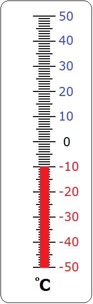
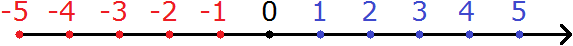
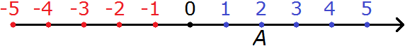
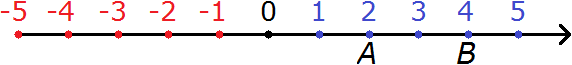
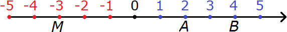
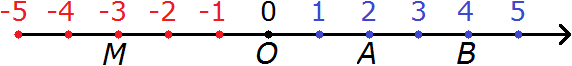
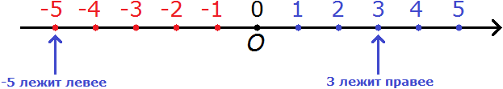
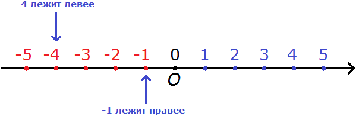
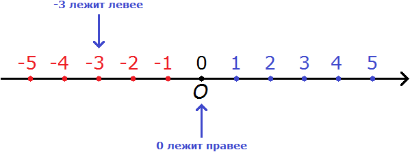
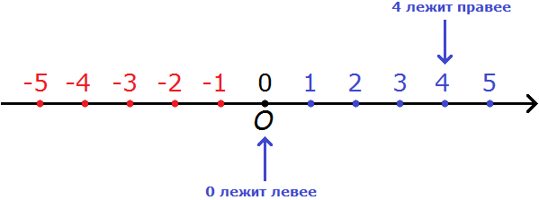

Отрицательные числа — это числа со знаком минус (−), например −1, −2, −3. Читается как: минус один, минус два, минус три.
Примером применения отрицательных чисел является термометр, показывающий температуру тела, воздуха, почвы или воды. В зимнее время, когда на улице очень холодно, температура бывает отрицательной (или как говорят в народе «минусовой»).
Например, −10 градусов холода:

Привычные же для нас числа как 1, 2, 3 называют положительными. Положительные числа — это числа со знаком плюс (+).
При записи положительных чисел знак + не записывают, поэтому мы и видим просто 1, 2, 3. Но следует иметь ввиду, что эти положительные числа выглядят так: +1, +2, +3.
Координатная прямая
Координатная прямая это прямая линия, на которой располагаются все числа: и отрицательные и положительные. Выглядит так:

Здесь показаны только числа от −5 до 5. На самом деле координатная прямая бесконечна. На рисунке представлен лишь её небольшой фрагмент.
Числа на координатной прямой отмечают в виде точек. На рисунке жирная чёрная точка является началом отсчёта. Начало отсчёта начинается с нуля. Слева от начала отсчёта отмечают отрицательные числа, а справа — положительные.
Координатная прямая продолжается бесконечно по обе стороны. Бесконечность в математике обозначается символом ∞. Отрицательное направление будет обозначаться символом −∞, а положительное символом +∞. Тогда можно сказать, что на координатной прямой располагаются все числа от минус бесконечности до плюс бесконечности:
(−∞; +∞)
Каждая точка на координатной прямой имеет своё имя и координату. Имя — это любая латинская буква. Координата — это число, которое показывает положение точки на этой прямой. Проще говоря, координата это то самое число, которое мы хотим отметить на координатной прямой.
Например, точка А(2) читается как «точка А с координатой 2« и будет обозначаться на координатной прямой так:

Здесь A — это имя точки, 2 — координата точки A.
Пример 2. Точка B(4) читается как «точка B с координатой 4« и будет обозначаться на координатной прямой так:

Здесь B — это имя точки, 4 — координата точки B.
Пример 3. Точка M(−3) читается как «точка M с координатой минус три» и будет обозначаться на координатной прямой так:

Здесь M — это имя точки, −3 — координата точки M.
Точки можно обозначать любыми буквами. Но общепринято обозначать их большими латинскими буквами. Более того, начало отчёта которое по другому называют началом координат принято обозначать большой латинской буквой O

Легко заметить, что отрицательные числа лежат левее относительно начала отсчёта, а положительные числа правее.
Существуют такие словосочетания как «чем левее, тем меньше» и «чем правее, тем больше». Наверное, вы уже догадались о чём идёт речь. При каждом шаге влево число будет уменьшаться в меньшую сторону. И при каждом шаге вправо число будет увеличиваться. Стрелка, направленная вправо, указывает на положительное направление отсчёта.
Сравнение отрицательных и положительных чисел
Правило 1. Любое отрицательное число меньше любого положительного числа.
Например, сравним два числа: −5 и 3. Минус пять меньше, чем три, несмотря на то, что пятёрка бросается в глаза в первую очередь, как цифра большая, чем три.
Связано это с тем, что −5 является отрицательным числом, а 3 — положительным. На координатной прямой можно увидеть, где располагаются числа −5 и 3

Видно, что −5 лежит левее, а 3 правее. А мы говорили, что «чем левее, тем меньше». И правило говорит, что любое отрицательное число меньше любого положительного числа. Отсюда следует, что
−5 < 3
«Минус пять меньше, чем три»
Правило 2. Из двух отрицательных чисел меньше то, которое располагается левее на координатной прямой.
Например, сравним числа −4 и −1. Минус четыре меньше, чем минус единица.
Связано это опять же с тем, что на координатной прямой −4 располагается левее, чем −1

Видно, что −4 лежит левее, а −1 правее. А мы говорили, что «чем левее, тем меньше». И правило говорит, что из двух отрицательных чисел меньше то, которое располагается левее на координатной прямой. Отсюда следует, что
−4 < −1
Минус четыре меньше, чем минус единица
Правило 3. Ноль больше любого отрицательного числа.
Например, сравним 0 и −3. Ноль больше, чем минус три. Связано это с тем, что на координатной прямой 0 располагается правее, чем −3

Видно, что 0 лежит правее, а −3 левее. А мы говорили, что «чем правее, тем больше». И правило говорит, что ноль больше любого отрицательного числа. Отсюда следует, что
0 > −3
Ноль больше, чем минус три
Правило 4. Ноль меньше любого положительного числа.
Например, сравним 0 и 4. Ноль меньше, чем 4. Это в принципе ясно и так. Но мы попробуем увидеть это воочию, опять же на координатной прямой:

Видно, что на координатной прямой 0 располагается левее, а 4 правее. А мы говорили, что «чем левее, тем меньше». И правило говорит, что ноль меньше любого положительного числа. Отсюда следует, что
0 < 4
Ноль меньше, чем четыре